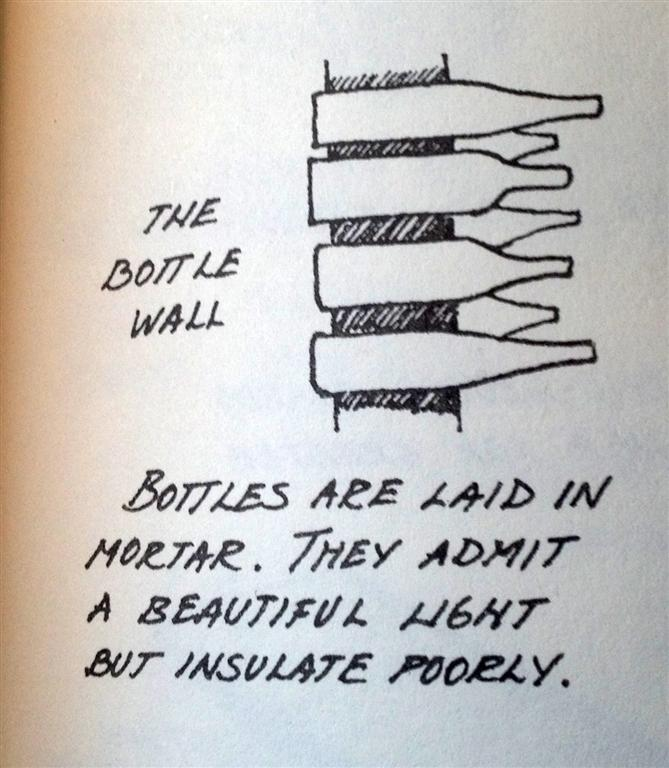
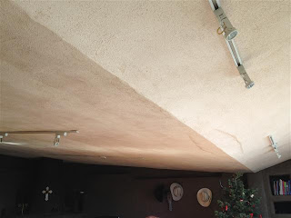
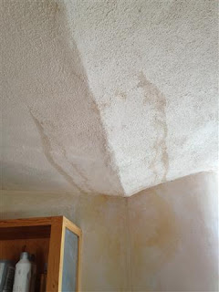

Earthships are a concept introduced in the 1970s, of using waste tires, glass bottles, and cans to create a structure that would be minimally impacting of the environment; off the grid and making its own water, heat and cooling. Exterior walls are constructed of earthfilled tires to provide thermal mass cooling and heating and interior walls are constructed of a honeycomb of empty cans and glass bottles. They are artistically beautiful and the houses appear to rise out of the earth as if by natural commandment.
I have some concerns with earthships that I have tried to share in the decade I have worked in architecture in New Mexico, as I helped friends and clients who frustrated about how their homes do not function as designed. I even had to consult on several demos from mold problems - what a nightmare! Then add that there are many earthships with north and west facing entrances, which are dust and ice magnets in Taos... and whole communities of earthships that have been built in such inhospitable places that they cannot be reached during the winter at all... and you get why I and some of my professional peers around the world have wondered aloud if these are sound investments. Here is some of what people have told us, both for and against the designs.
Pros
(in theory, only works in some climates, see here for more info, as well as... some of these are not as pro as they seem, which we explain)
- Energy efficiency: the buildings CAN utilize solar and/or geothermal heat, cooling and hot water, and provide rain and greywater harvesting. (They often don't, actually, but more on that in a minute.)
- Self-sustainability: grow veggies inside, use and reuse water, and minimize impact on the environment. (It doesn't actually work like that but the idea is there.)
- Ease of construction: in principal, anyone can build an earthship. If you can pound dirt, you can do it! (Problem is... Not many can sustain 2 hours of pounding per tire x 900 tires.)
- "Recycling": some of the materials used in an earthship come from used products that would otherwise fill up a landfill. (Con side: While the "recycled" (really reused) tires, glass bottles (2000), and aluminum cans (10,000) used may be “free”… they take time to collect. Hours and hours of it. And the plans and permits, excavation, tools, concrete, wood framing and vigas, roofing, cooling tubes, insulation and thermal wrap, cisterns, interior finishes, glazing for two walls of windows, shades, glass doors, appliances, and the systems… are not free. Nor are they natural. Nor are most recycled. These use virgin material. And LOTS of it. And.... Europe is performaing at 98% of ACTUAL recycling (rather than reuse), so using tires, bottles, and cans in your build would mean those materials were removed from the recycling stream, where they can actually be recycled for new uses.)
- Natural light: these buildings can have it in abundance. (On the side not in the back by the berm, where its dark, cold, and gloomy.)
- Extraordinary organic forms and interesting massing are hallmarks of the design's success. (Problem is... the organic forms are made of concrete in most cases. That's not natural. It's just pretending to be.)
diagram from A Shelter Sketchbook by John S Taylor
Cons
- Earthships don't work as they are intended. Not even here in New Mexico. The further you get away from new Mexico, the more issues they have. There is no such thing as a "global model" of ANY kind of architecture. Anyone who tries to sell that idea is selling snake oil.
- You will not raise all the food you need to survive in your earthship. It's not possible. Anywhere.
- Many people like to think that earthships are "natural." That is simply not accurate. They are beautiful, organically shaped objects that embrace recycling in a way that can help keep things out of the landfill - which is GREAT in principal. However, more than half of the volume of materials used in the build is concrete, which contributes 10% of the world's greenhouse gases and removes oxygen from the air you breathe - this can be a real issue if you have breathing issues or allergies, as you will be competing with your HOME for oxygen.
- Despite the legends that the earthships are ultra-affordable for people who want to build their own homes and save money, there is actually no cost savings in designing and building an earthship over a conventional home, unless you can perform 100% of the work and obtain all the products yourself, and even if you can accomplish that, in the US, $150 per square foot will get you a bare-bones earthship that has all the same features of a "real" one. (You can do it for less, but it won't actually work like an earthship. Even a real earthship doesn't work. But it has a higher baseline of performance than most modified designs built for less.) This cost goes up depending on how craftsmanship-challenged you may be. It costs $225 per square foot to have Earthship Biotecture build your earthship. It also may take you up to 2 years to build your own earthship. In comparison, you can design and have built a home of "sustainable" construction in a few months, with NO effort, for the same amount of money. However, the sustainable they sell you, will be (only) slightly less sustainable than an earthship. The earthship that everyone wants to point to to say "hey look, these CAN work" is the Phoenix. It's gorgeous! And you too can have it for a mere ... wait for it... $1,500,000!!! But you probably won't be able to insure it or get a mortgage, so please have cash on hand.
- There's a myth that you can build an earthship for cheap and resell it for lots of cash. Any real estate agent in Taos will tell you... it can take 3 years or more to sell an earthship. And, according to research done by RealAssetsJunkie.com, the net gain on the sale of an average earthship is (-$57,800). As in... you can take a loss of up to $58k.
- If you have questions, calling EB/MR to find out how to fix your house will cost you $150 for a HALF HOUR. ouch.
- Once the earthship settles, the breakdown of the rubber tires, which by nature was already in process, now happens in an enclosed environment. Which means, the gas expelled by the tires as they disintegrate collects in the walls, and then has the potential to release toxic vapors that you can't smell but could make the inhabitants sick. "They" will tell you that the walls are encased, and that by adding vents, that off-gassing is not a concern, which is only true as long as you replaster every surface EVERY YEAR and don't allow cracks anywhere on the tire wall, and as long as the gas doesn't find its way into any invisible pockets (which are unavoidable) that happen to NOT be near a vent. If the gas builds up in a closed system... well, think of a balloon... if you blow it up past its surface area, it bursts. If you try and encase the gas, it might work, for a while... but then what? We don't know and we aren't sure we trust the people that profit from these designs to tell the truth about how dangerous this could be. (That's kindof like asking Monsanto if GMOs are bad for you.) Here's a link to our collected scientific research on the subject.
- In a humid environment, earthships collect water along their interior wall surfaces, forming a vertical pool for molds and algaes to grow, and often within the walls of your planting areas, so that edible plants are infected or overwatered. This is an epidemic issue among the many people we get calls from who do not live in an arid envinronment as the earthships were "designed for." (Which is somewhat absurd, since any vernacularly trained architect can tell you they are not actually designed for this environment AT ALL.)
- In a dry environment, like New Mexico, it is not physically possible to collect enough rainwater to support the house. Many who have earthships have to get in their cars, drive 30 minutes to town each way, and buy water just to survive, let alone wash dishes or laundry. If you have more than 11 inches of rain per year THAT HIT THE GROUND, you might be alright, if you are a couple or only have one child and limit your water use.
- Because earthships are not designed in concert with the environment in most cases, and landscaping is just not a concern, they tend to have hot and cold spots. In the summer the galleries at the south wall, where the slanted windows are, are stiflingly hot and humid (95°F is common). The heat is not sweltering in winter, but neither is it comfortable. Also in the winter, because there are not many windows in the north-side rooms, which in early designs include ALL of the living spaces, the north ends of the rooms stay at or near earth temperature, that being about 60 degrees. So you have to have a sweater in part of the house and then you strip to your skivvies to pass through to another part of the house and then need your sweater again to settle into that room. Even in the winter, non-vented earthships can be stiflingly hot. We have one friend who has to open every door and window in the freezing winter even if snow is blowing sideways to find relief from this overheating condition. Supposedly, roof venting helps with this, as it will with overheating in the summer, which is quite common, according to our clients and friends. An additional layer of shade cloth is often required over the south windows in the summer to prevent overheating. A ton of research has been done on these systems and they consistently fail in humid environments. Here's a link to the best of that research.
- Also pertaining to temperature, we've read on several threads that the earthships take 2-3 years to "find their median temperture." I cannot help but to wonder if this is more that it takes people 2-3 years to get used to the temperature swings (which shouldn't exist in the first place.)
- The slanted windows create some real issues, including snow loading creating fractures of the glass, leaking into the walls, and cutting off the light from the passive solar. The only option to deal with this is to go outside and sweep the snow off the windows. Every snowy day. While being at least knee-deep in all the snow that's piled up at the base of the windows... so get good gollashes!
- Also, on the slanted windows, you MUST use a tracked blind, which is expensive, and they tend to break as they are designed for working in vertical applications. Getting in a physical position to install, remove, or repair the blinds can be a real trick, as can repairing or replacing the window.
- If the day is grey, it's going to be COLD in the earthship unless you have a backup heat source. (We recommend wood stoves as they are also suitable for cooking if your solar system isn't sufficient to provide comfort in inclement weather.)
- Evidently there are issues with too much humidity resulting in condensation in the biocells during the winter.
- I have never seen a solidly built, leakless, or easy to repair design.
- Additions are rarely feasible, due to construction tie-in issues and cost.
- Storage in earthships is lacking... we often hear complaints of there being barely any closet, cupboard, or storage space.
- The butterfly roofs, especially, WILL leak.
- If you are looking for a challenge (and a giant check to write), ask a contractor to come out and work on your earthship and see what happens.
- The pumps to run the greywater and rainwater harvesting mechanisms are LOUD.
- Earthships are considered "experimental architecture" and building codes are not designed for experiments. Many locations do not allow them. They will NOT be approved for an assembly occupancy like a school or community center.
- Financing for experiments is rarely available. You will have to have cash on hand for the build or find a very special banker to even consider a mortgage on an earthship.
- Insurance can be tricky to obtain too. Only Brown and Brown Insurance in Taos are willing to insure Earthships in New Mexico. Here's a link to the free chapter about this we posted in our blog.
- It is challenging to resell an earthship.
- Every piece is custom constructed and therefore comes with custom time and custom cost. If you are a do-it-yourselfer, that is great. If you are on a budget, that is not.
- Oh, and there are the bugs. Centipedes, jerusalem crickets, and false scorpions are most common in Taos. Anything that likes to live underground seems to want to live in these homes.
The ugly truth about roofs 1
The ugly truth about roofs 2
I'm really excited to see Earthship Biotecture embracing the spirit of its work. They are taking their designs to places around the world where experimental architecture is a benefit and codes are more lenient, which allows them to tweak the designs to make them work better. I hope they succeed. In the meantime, we've started collecting tips and tricks from various sources that can help them work better here, and now. Find them here.
Definitely use the ideas from earthships, including wetlands for greywater harvesting, recycled bottle and can walls, and good passive design techniques as part of your design. Earthships, for all their faults, are a GREAT place to start and find some really wonderful ideas!
If you'd like to know more about our earthship research, Check out our free blog from the book we wrote about them.
If you'd like to know more about alternatives to earthships that harness the best of the designs but are doable naturally, check out our book Hacking the Earthship: In Search of an Earth-Shelter that WORKS for EveryBody